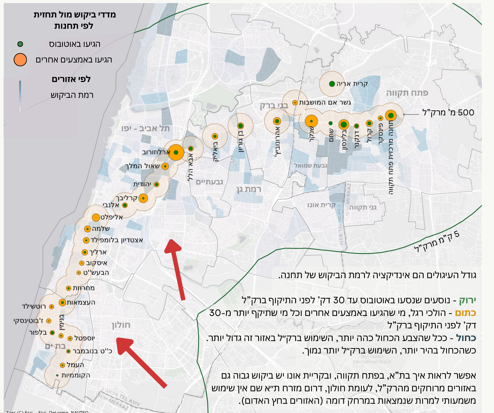

כבר קצת יותר משנה שהרכבת הקלה פועלת בגוש דן, וזה הזמן לבדוק כיצד היא משרתת אותנו. איך היא שינתה את דפוסי הנסיעה שלנו? האם השתפרה מהירות הנסיעה? האם היא יעילה יותר מאוטובוס ואמצעי תחבורה אחרים? מה בה עובד טוב, ומה דווקא צריך לשפר? ולמה היא לא עומדת בנתוני השימוש שצפינו? הדוח מציע כמה סיבות אפשריות, וכמה הצעות לשיפור... כל הנתונים כאן לפניכם.
הדוח מקיף ומתבסס על מספר מקורות מידע, ביניהם מערכת הנתונים של 15 דקות בשיתוף יישומון "הופאון רב-פס", נתוני מסלקה של משרד התחבורה, נתוני זמן אמת (SIRI), ניתוח ערוץ הטלגרם של "תבל", בדיקות מדגמיות בשטח ודיווחי נוסעים.
צלילה לנתוני התיקופים חושפת דפוסים מעניינים של יוממות בגוש דן. בחרו תחנה כדי לגלות באילו שעות היא הכי עמוסה.
נתוני התיקופים בכל תחנה מספרים את סיפור היוממות של גוש דן. הם חושפים מתי הנוסעים מגיעים, ולאן הם כנראה הולכים. בואו נחקור את המספרים האלה כדי להבין טוב יותר את דפוסי השימוש ברכבת הקלה.
בחר תחנה מהרשימה למעלה כדי לראות את הנתונים.
התפלגות תיקופים לפי שעות היום:
הנתונים הללו מאשרים את מה שאנו רואים בשטח: הרכבת הקלה משרתת היטב את היוממות היומית, אך גם משקפת את דפוסי הפנאי והאירועים המיוחדים. הבנת ההתפלגות הזו חיונית לתכנון עתידי ולמיטוב השירות.
ניתוח מבוסס על יותר משני מיליון תיקופים דרך אפליקצית הופאון מתחילת הפעלת הרק"ל, מנורמל לאחוז שימוש באפליקציה בתחנה.
האם הרכבת הקלה באמת מהירה יותר? בואו נבחן את המהירות הממוצעת במקטעים שונים של הקו האדום.
אחד ההבטחות המרכזיות של הרכבת הקלה הייתה נסיעה מהירה ויעילה יותר. אך האם המציאות עומדת בציפיות? נבחן את נתוני המהירות הממוצעת לאורך התוואי כדי לגלות היכן הרכבת באמת טסה, והיכן היא נתקלת בקשיים.
בחר מקטע מהרשימה למעלה כדי לראות את הנתונים.
מה קורה כשמשווים את המהירות בין המקטעים השונים?
המספרים מדברים בעד עצמם: המקטע התת-קרקעי מספק את היתרון המשמעותי ביותר במהירות, מה שמסביר את הפופולריות שלו. המקטעים העיליים, לעומת זאת, עדיין מתמודדים עם אתגרי מהירות המשפיעים על האטרקטיביות של הרכבת באזורים אלו.
חישוב מהירות מבוסס על נתוני זמן אמת ממשרד התחבורה (SIRI), מאי עד ספטמבר 2024.
האם הרכבת הקלה מחוברת היטב לרשת התחבורה הציבורית הקיימת? נתוני ההחלפות מספקים תמונה ברורה.
רשת תחבורה ציבורית יעילה תלויה בקישוריות טובה בין אמצעי התחבורה השונים. עד כמה הרכבת הקלה משתלבת עם קווי האוטובוס והרכבת הקיימים? נתוני ההחלפות חושפים פערים משמעותיים.
רק כ-10% מהנוסעים ברק"ל מבצעים החלפה ונסעו לפני כן באוטובוס או ברכבת ישראל.
יש צורך באמצעי תחבורה ציבורית מזינים לקו, שיוכלו לקשר ביעילות בין אזורים שלא נמצאים על התוואי ובין הרכבת ולאפשר החלפה קלילה.
בגני תקווה למשל יש את קו 75 החדש, שנוצר במטרה להסיע את התושבים לתחנת הרק״ל הקרובה. הקו הוא תוצאה של הצלחת שאטל ביוזמת העירייה שהוכיח את הביקוש לקו. העירייה היא זו שלקחה אחריות על התחב״צ בעיר, יצרה קו לתושבים, ובעקבות ההצלחה המסחררת, במשרד התחבורה לא יכלו להישאר אדישים, והקצו קו ייעודי.
הסיפור של גני תקווה מדגיש את הפוטנציאל העצום של קווים מזינים יעילים. כאשר הרכבת הקלה אינה נגישה בקלות מאזורים סמוכים, אנשים פשוט לא ישתמשו בה. השקעה בקישוריות היא השקעה במימוש הפוטנציאל של כל המערכת.
האם הרכבת הקלה מממשת את מלוא הפוטנציאל שלה? מפה זו משווה את השימוש בפועל לביקוש הצפוי באזורים שונים.
כמה אנשים באמת יכולים וצריכים להשתמש ברכבת הקלה, לעומת כמה באמת משתמשים בה? הפער הזה הוא לב ליבו של הדיון על הצלחת הפרויקט. מפה זו מציגה ויזואלית את הפוטנציאל הלא ממומש.
!ניתן להגדיל באופן דרמטי את השימוש באמצעות קווים מזינים או שאטלים ממוקדים ממרכזים ישירות אל תחנת הרק"ל הקרובה!
הביקוש הצפוי מחושב על בסיס כמות אנשים באזורים סטטיסטים ואחוז משתמשים בתחבורה ציבורית לפי מפקד האכלוסין 2022 וכמות מקומות עבודה.
ענה על השאלות הבאות כדי לקבל הערכה אישית:
כיצד משתווה הרכבת הקלה לקווי האוטובוס המקבילים? נתונים אלו חושפים את ההשפעה על הרגלי הנסיעה.
כדי לה entender את ההשפעה האמיתית של הרכבת הקלה, עלינו להשוות אותה לחלופות הקיימות. כיצד היא עומדת מול קווי האוטובוס המקבילים שהיו עמוד השדרה של התחבורה הציבורית בגוש דן? המספרים חושפים תמונה מעניינת.
ניתחנו את השפעת הרק"ל על השימוש בקווי האוטובוס המקבילים במסלולם לקו האדום. הנה השוואה ויזואלית של כמות הנוסעים לקילומטר בין הרכבת הקלה בגוש דן לזו בירושלים:
קבלו נתון מעניין! לקו האדום יש פי 4 יותר משתמשים מאשר לקו 1, שהיה הקו המכין לקו האדום (כ-500 אלף תיקופים בשבוע לעומת כ-120,000).
רבים מהמשתמשים בקו האדום לא השתמשו לפני כן בקו 1 - כלומר הגיעו משתמשים חדשים בזכות תשתית טובה יותר.
קבלו נתון מעניין! אחוז התיקופים ברק"ל בגוש דן עומד על כ-3% מכלל התיקופים הארציים, בעוד שבירושלים הוא 4-5%.
בצלילה לעומק, ברכבת הקלה בירושלים יש כ-30 נוסעים לקילומטר נסיעה, בעוד שבגוש דן יש רק כ-10 נוסעים לקילומטר נסיעה.
ההשוואה לירושלים חושפת פער משמעותי בשימוש פר קילומטר. אמנם הרכבת הקלה בגוש דן הביאה משתמשים חדשים, אך היא עדיין לא הגיעה לרמת היעילות והשימוש של המקבילה הירושלמית. הבנת הסיבות לכך חיונית לשיפור עתידי.
כמות משתמשים פר קילומטר נסיעה - על פי כמות תיקופים מול כמות נסיעות מתוכננות ואורך הקווים.
נתוני מסלקה כללית, משרד התחבורה.
מה חושבים הנוסעים על הרכבת הקלה? אספנו משובים נפוצים מהציבור.
מעבר לנתונים היבשים, חשוב לשמוע את קולות המשתמשים עצמם. מה הם חווים ביום-יום? מה עובד טוב, ומה עדיין מהווה אתגר? המשוב מהשטח משלים את התמונה הסטטיסטית ומצביע על נקודות קריטיות לשיפור.
באופן כללי יש שביעות רצון גבוהה מפעילות הרכבת הקלה, בעיקר בחלק התת קרקעי ובפתח תקווה, ומהתדירות הגבוהה. עם זאת, עלו מספר משובים שחוזרים על עצמם:
המשוב מהציבור מצביע על הצלחות לצד נקודות תורפה. בעוד שהנוחות והתדירות זוכים לשבחים, סוגיות כמו נגישות בתחנות ושילוט עדיין דורשות טיפול. הקשבה לקולות אלו היא המפתח לשיפור חווית הנסיעה ולהגברת השימוש ברכבת.
לסיכום, מה למדנו משנת הפעילות הראשונה של הרכבת הקלה, ומה צופן העתיד?
אחרי שנה של פעילות, התמונה ברורה יותר. הרכבת הקלה היא צעד משמעותי קדימה, אך עדיין יש דרך לעבור כדי לממש את מלוא הפוטנציאל שלה. נסכם את הממצאים העיקריים ונביט קדימה אל האתגרים וההזדמנויות בעתיד התחבורה הציבורית בגוש דן.
הרכבת הקלה חוללה מהפכה ושינתה הרגלי נסיעה. המקטע התת-קרקעי והקו בפתח תקווה מספקים אלטרנטיבה טובה לרכב הפרטי.
יש לשפר את מהירות הנסיעה בחלק העילי בבת ים ויפו - המהירות האיטית משפיעה על נתוני השימוש. יש להעניק לרק"ל עדיפות ברמזורים.
כדי להעלות את רמת השימוש עד שתהיה רשת קווים מלאה, יש לבנות רשת יעילה של קווי אוטובוס מזינים.
הסיבות לשימוש נמוך ביחס לתחזיות: מהירות נמוכה במקטעים מסוימים והיעדר קווים מזינים יעילים. לקו האדום פוטנציאל אדיר שאינו ממומש במלואו.
חווית הנוסע השתפרה לאורך השנה (פחות תקלות, תדירות גבוהה יותר), אך יש לשפר את מנגנון היידוע לציבור בזמן תקלות ושינויים, ולטפל בסוגיות המרכזיות שעלו בדוח זה כמו ספסלים בתחנות, בולטות ונגישות התחנה ועוד.
הקו האדום הוא הישג משמעותי לשיפור התחב"צ בישראל ולשירות חדיש, אמין ויעיל. יש לקדם במהירות את תשתיות הרק"ל בקווים הנוספים וכן את המטרו - הפרויקט הלאומי הגדול ביותר להסעת המונים. כל אלו יביאו עימם בשורה אמיתית וישנו את המציאות התחבורתית בישראל.